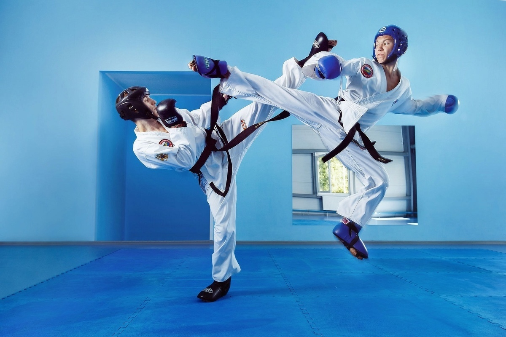

Тэквондо и физическое развитие
Изучение таэквондо даёт несколько уникальных преимуществ в физической подготовке. Таэквондо можно заниматься индивидуально или в группах, не применяя отягощений и специального оборудования. В большинстве случаев (кроме спарринга) им занимаются в одиночку. Поскольку тело само устанавливает границы, какие-либо повреждения и раны очень редки, а изменения физического состояния занимающихся учитываются автоматически. Вся Мышечная система от пальцев рук до пальцев ног начинает активно действовать.
В результате тренировок мышцы не делаются рельефными, просто происходит превращение жировой ткани в мышечную. При занятиях тяжёлой атлетикой рост объёма мышц не сопровождается образованием новых кровеносных сосудов, в тканях появляются области, плохо омываемые кровью. Кислород с трудом поступает в такие области мышечной ткани, недостаток кислорода компенсируется повышением кровяного давления, и, в связи с этим, усталость наступает скорее.
Характерные, для занятий таэквондо большое число повторений и небольшие преодолеваемые сопротивления развивают змеиную тонкую мускулатуру. Такие мышцы располагаются ближе к кровеносным сосудам и, таким образом, достигается большая выносливость и работоспособность
Осуществляющиеся, при выполнении ударов ногами, а также балансирующих движениях руками повороты таза хорошо развивают мышцы брюшного пресса. Большинство ударов в таэквондо связано с высоким подъёмом ног, что развивает боковые мышцы туловища и внутренней поверхности бедер.
Стандартный режим тренировок связан с активной работой всего тела. Следствием такой работы является увеличение частоты сердечных сокращений, долговременное повышение интенсивности кислородного обмена в сердце и лёгких. Подобная усиленная вентиляция называется аэробным эффектом.